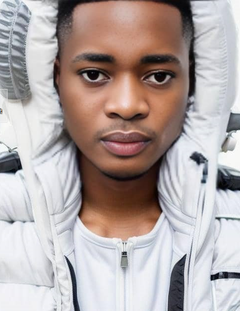

Oluwaniyi Akinoladapo | WDD 130
My name is Oluwaniyi Akinoladapo, and I currently work and reside in Lagos. I am genuinely thrilled to embark on a new chapter in my professional journey by venturing into the dynamic world of web development. My passion for coding and creating digital solutions has propelled me towards this exciting career transition. Living in Lagos, a bustling hub of innovation, has only fueled my enthusiasm for technology, and I look forward to harnessing my skills to contribute meaningfully to the ever-evolving field of web development.
For as long as I can remember, I've had a knack for problem-solving and a deep-seated passion for technology. It's what led me to this moment — ready to dive headfirst into coding and creating digital solutions that can truly make a difference.
Living in Lagos, with its constant innovation and entrepreneurial spirit, has only fueled my ambition. Every day, I'm surrounded by movers and shakers who are pushing boundaries and breaking new ground. It's an environment that's not just inspiring; it's downright infectious.
Now, as I take this leap into web development, I'm excited about the technical aspects — from mastering languages like HTML, CSS, and JavaScript to exploring frameworks like React and Angular. But what truly drives me is the chance to build something meaningful.
I envision crafting digital experiences that not only look sleek and polished but also serve a real purpose in people's lives. Whether it's a sleek e-commerce platform that makes online shopping a breeze or a community-driven app that connects local businesses with their customers, I want my work to make a difference.
But I know I can't do it alone. Collaboration is at the heart of innovation, and I'm eager to connect with fellow developers, designers, and creators who share my passion for pushing boundaries and thinking outside the box. I'm brimming with excitement for the journey ahead. From learning new languages and frameworks to collaborating with like-minded individuals, I'm eager to soak up every bit of knowledge and experience.
Sure, there will be challenges along the way, but I thrive on them. Each obstacle is an opportunity to grow, to learn, and to come out stronger on the other side.
So, if you're as passionate about web development as I am, let's connect. Together, we can harness the power of technology to shape a brighter, more connected future. The adventure starts now, and I couldn't be more thrilled to be a part of it.